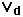
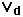

Charge Carriers in the Hall Effect
The Hall effect is a conduction phenomenon which is different for different charge carriers. In most common electrical applications, the conventional current is used partly because it makes no difference whether you consider positive or negative charge to be moving. But the Hall voltage has a different polarity for positive and negative charge carriers, and it has been used to study the details of conduction in semiconductors and other materials which show a combination of negative and positive charge carriers.
The Hall effect can be used to measure the average drift velocity of the charge carriers by mechanically moving the Hall probe at different speeds until the Hall voltage disappears, showing that the charge carriers are now not moving with respect to the magnetic field. Other types of investigations of carrier behavior are studied in the quantum Hall effect.
|
Index
Electromagnetic force
Magnetic force
Magnetic field concepts |
 where  is the drift velocity of the charge.
where  is the drift velocity of the charge.